flatQ docs
flatQ applies a correction profile for your headphones or speakers to everything you play. This page walks through the whole window. Click any screenshot to see it larger.
Install
- Download the zip for your system from the download section.
- Copy the plug-in to its folder:
- macOS:
flatQ.vst3to~/Library/Audio/Plug-Ins/VST3, andflatQ.component(Audio Unit) to~/Library/Audio/Plug-Ins/Components. - Windows: the
flatQ.vst3folder toC:\Program Files\Common Files\VST3. - Linux: the
flatQ.vst3folder to~/.vst3.
- macOS:
- Rescan the plug-ins in your DAW.
- Insert flatQ as the last effect on your master or stereo out, so it corrects what your headphones or speakers actually play.
- Pick a profile on the left. The calibration is on as soon as a profile is loaded.
The window

- Left bar
- Your profile library. The icon says whether a profile is for headphones or speakers. The round + adds a profile.
- Header
- The loaded profile, and a summary: whether both channels share one curve or are independent, the preamp, and the max fit error, which is how far the filter ends up from the ideal curve.
- Graph
- The correction, drawn for the left and right channels. See The graph.
- Bottom row
- Latency and the settings that shape the filter: Filter, FIR length, Smoothing, Limits, Preamp and Manual EQ. Click one to open its options.
- Right strip
- Input and output meters with clip lights, the output fader, and the buttons to swap channels, sum to mono and mute. At the bottom, the calibration switch.
- Dry / Wet
- Mixes the original sound with the corrected one. 100 % is fully corrected.
Headphone profiles usually share one curve for both ears. Speaker profiles often keep a separate curve per channel, shown as an L and an R dot in the legend.
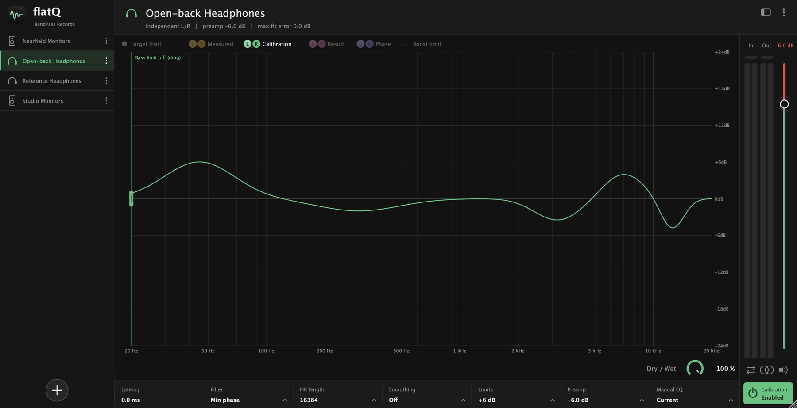
Profiles
A profile describes how a pair of headphones or a set of speakers deviates from flat. flatQ applies the opposite.
Add a profile
Press the round + at the bottom of the left bar. You can:
- Search the profiles that come with flatQ, filtered by brand or form.
- Load a profile file from disk: a flatQ profile (
.flatq) or an RME TotalMix profile (.tmreq). - Import a measurement: a CSV with frequency and raw columns, like the ones AutoEq publishes. You choose the target curve (flat, Harman and others) and flatQ builds the profile for you.
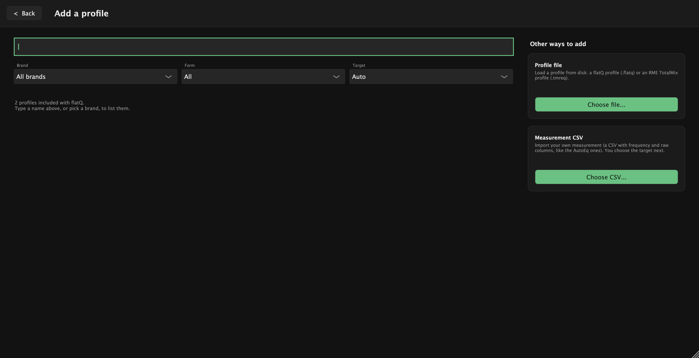
Manage a profile
The three dots on a profile open its menu.
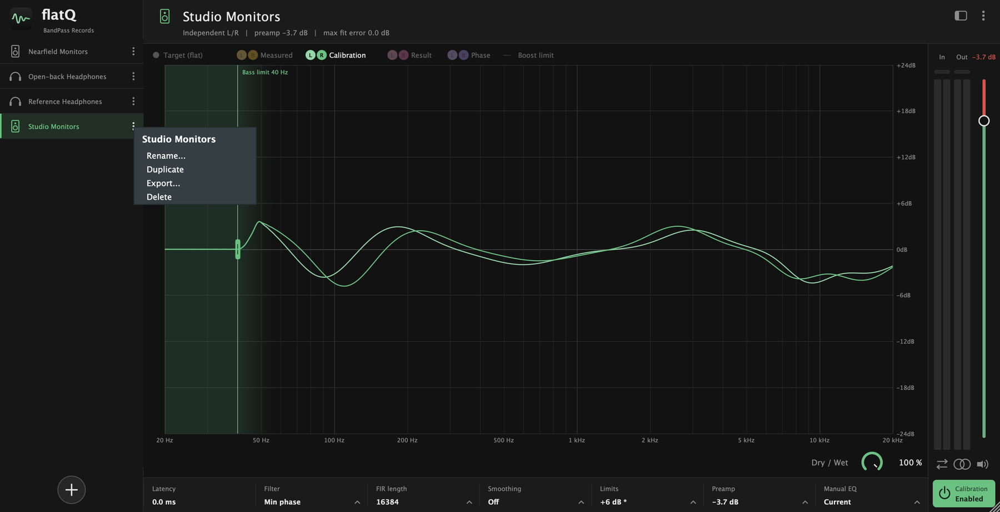
Profiles are saved in your user folder. Settings → Open profiles folder takes you there, so you can also copy .flatq files in by hand.
Hide the left bar
The square button next to the menu hides or shows the left bar, for a bigger graph.
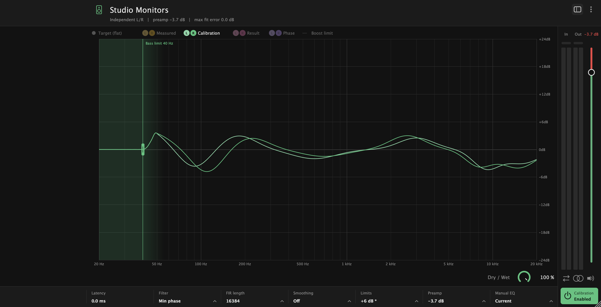
The graph
The graph runs from 20 Hz to 20 kHz and ±24 dB. Click an item in the legend to show or hide it.
- Target
- The goal: a flat line at 0 dB.
- Measured
- What your headphones or speakers do, as the profile describes them.
- Calibration
- The correction flatQ applies. It is drawn by default.
- Result
- Measured plus Calibration. It should land on the flat target.
- Phase
- The phase of the correction, from −180° to +180° (scale on the right edge of the graph). It is off by default. With linear phase it is a flat line at 0°; minimum phase and low latency bend the phase a little where the correction is strong.
- Boost limit
- The dashed ceiling some profiles carry for how much they may be boosted. It only shows when the profile has one.


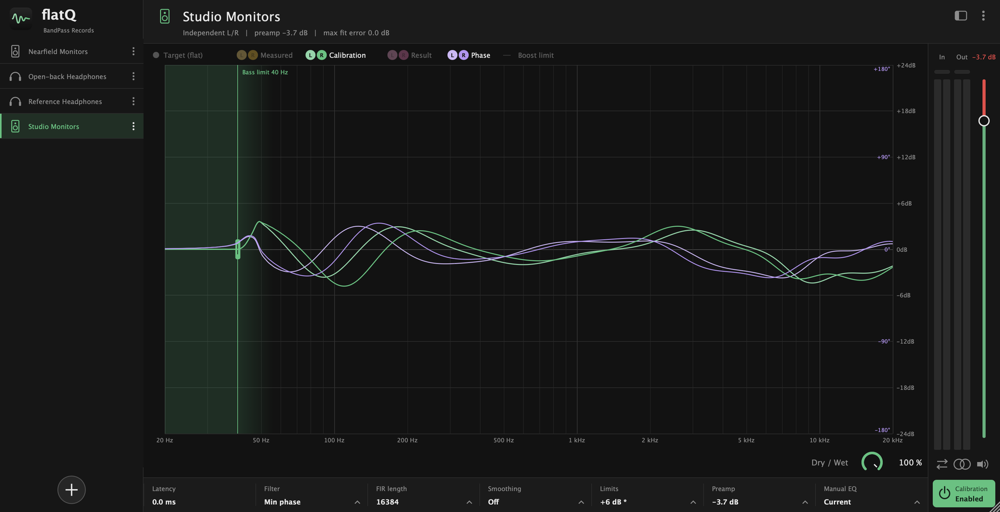
Bass limit
Many speakers cannot play deep bass, and asking for a huge boost there only wastes headroom. Drag the green line on the graph to choose a frequency: boosts below it are cancelled, and the allowed boost rises smoothly back to normal a little above the line. The shaded area shows where the limit applies. Drag the line all the way left to turn it off.
Filter and FIR length
The Filter setting decides how the correction is built.
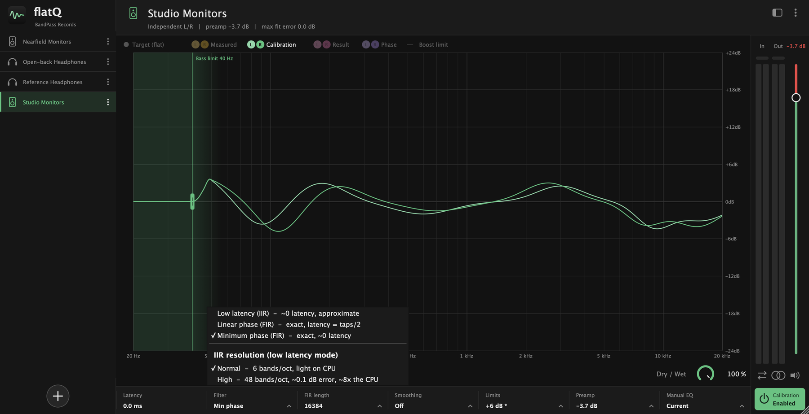
- Minimum phase (FIR)
- The default. Exact, with about zero latency and no pre-ringing. A good choice for almost everything.
- Linear phase (FIR)
- Exact and perfectly symmetric, but it adds latency (half the FIR length). Use it for critical listening when latency does not matter.
- Low latency (IIR)
- About zero latency and approximate. Good for monitoring while you record. The IIR resolution chooses between Normal (6 bands per octave, light on the CPU) and High (48 bands per octave, about 0.1 dB error, about 8 times the CPU).
FIR length is the number of taps of the FIR filter. More taps resolve the bass better; fewer taps use less CPU.
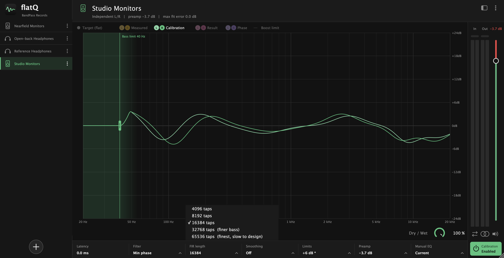
The Latency readout in the bottom row always shows the delay the current choice adds.
Limits
Deep dips in a measurement ask for huge boosts. The limits keep the correction in a safe range.
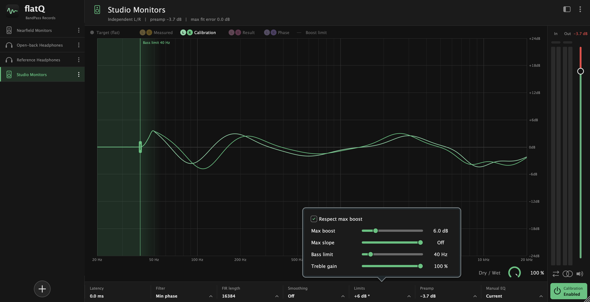
- Respect max boost
- Keeps boosts under the global maximum and under the profile's own ceiling, when it has one.
- Max boost
- The most the correction may boost, in dB.
- Max slope
- How fast a boost may rise, in dB per octave. The further left, the stricter; the maximum means off. It cuts narrow boosts first, usually in the treble. Cuts are never limited. 18 dB per octave is a common choice.
- Bass limit
- Cancels boosts below a frequency. The same control as the line on the graph.
- Treble gain
- Scales the correction above roughly 4 to 8 kHz. 100 % leaves it untouched; 0 % applies no treble correction.
A * next to the value in the bottom row means the max slope or the bass limit is on too. Hover over it to see all three.
Smoothing
Measurements are bumpy. Smoothing evens out the correction so it does not chase every narrow peak and dip, which is what makes a correction sound ringy.
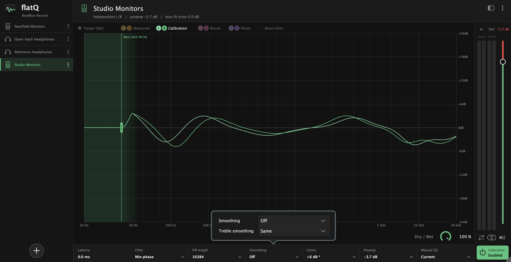
Smoothing sets the width for the whole curve. Treble smoothing sets a separate width, from 1/6 to 2 octaves, for the treble, where narrow corrections matter less to what you hear. The default is Same, which uses the same width everywhere.
Preamp
When the correction boosts, the signal can go over 0 dB. Auto preamp lowers the overall gain by the amount needed, so the correction never clips.
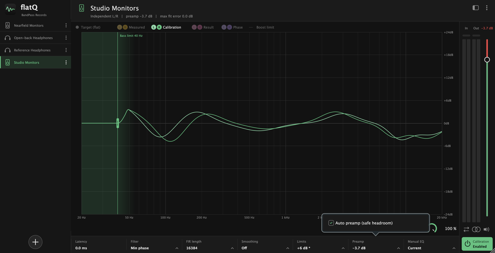
The preamp is applied, but the graph is drawn from 0 dB so the curves stay easy to read. You can see the amount in the header and above the output fader.
Manual EQ
On top of the profile you can trim 31 third-octave bands, from 20 Hz to 20 kHz, by up to 18 dB.
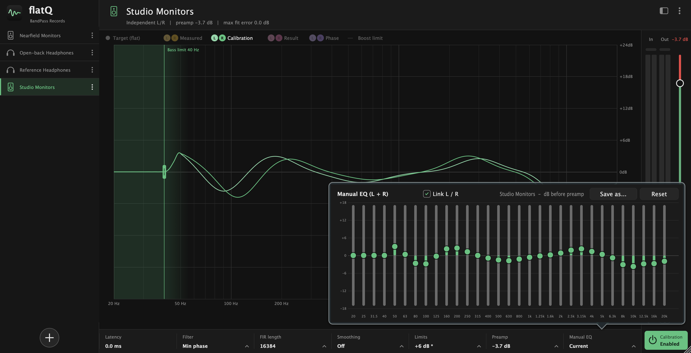
- The sliders start from the current equalization, not from zero.
- Link L / R moves both channels together. Turn it off to trim each channel on its own.
- Save as… stores the result as a new profile in your library.
- Reset clears your manual trim.
Output controls
The strip on the right is the last stage of the plug-in.
- In / Out meters with a thin clip bar above each. The bar turns red when the level reaches 0 dBFS and stays red until you click it.
- Output fader. The level shows above it. The red part at the top marks the levels above the profile's limit.
- Swap L/R exchanges the two channels.
- Mono sums left and right.
- Mute silences the output.
- Calibration switches the whole correction on and off, to hear the difference.
Whenever one of these changes what you hear, a notice appears on the graph with a button to undo it.
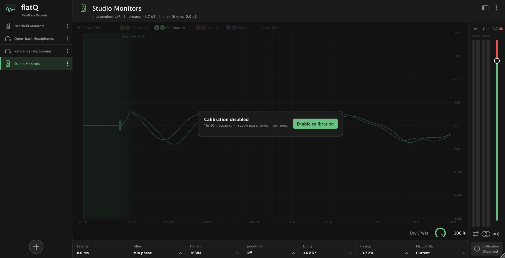
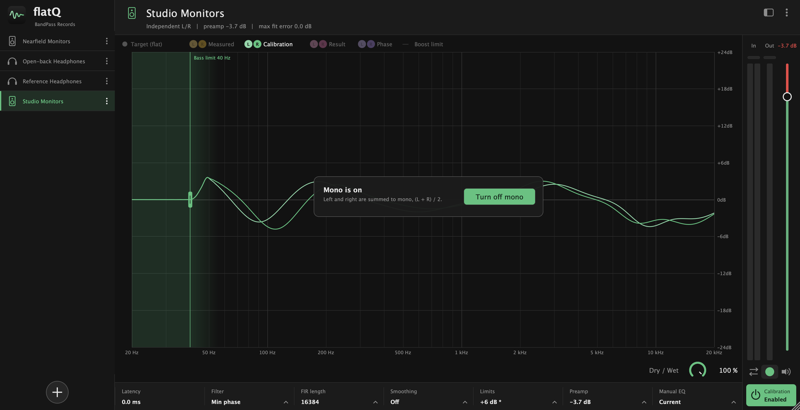
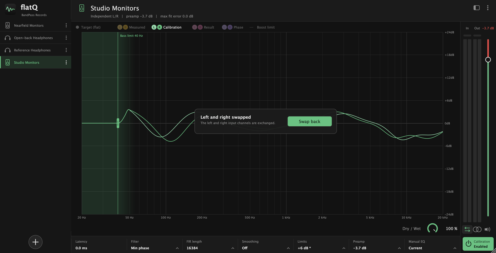
Tips
- Start from a profile that matches your gear, then listen with the calibration on and off. The change should sound like a more even, less coloured version of the same music.
- If the bass sounds boomy or pumps, lower the max boost or raise the bass limit.
- If the treble sounds metallic, try more smoothing, or lower the treble gain.
- For tracking, use the low latency (IIR) filter; for mixing and mastering, minimum phase.
- Do not leave it on when you export a mix: use Skip on offline export, or switch the calibration off.